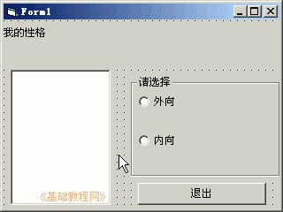
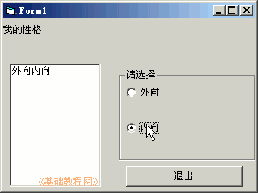

2011-2012 第一学期九年级 VB 教学课程设计
作者：TeliuTe 来源：基础教程网
十六、学会单选按钮 返回目录 下一课
学习目标：学会使用框架，组合多个单选按钮；
注意事项：绘制的时候先画框架；
1、绘制控件
1）打开一个标准EXE，绘制一个标签，一个文本框，一个按钮， 1个框架、2个单选按钮
Label1的Caption属性改为“我的性格：”
2）设置好控件的字体和颜色，文本框字号小一点；

3）进入代码窗口，点击对象下拉列表，依次选择“Option1、Option2、Command1”，在出来的代码段中分别输入；
'Option1:
text1.text = text1.text + option1.caption
'Option2:
text1.text = text1.text + option2.caption
'Command1:
end
4）保存为“第十六课”，点菜单“运行－启动”，在文本框中输入内容；

板书设计：第16课 学会单选按钮
1.1个窗体、标签、文本框、按钮
2.1个框架、2个单选按钮(外向、内向)
课后记 2011-12-23 17:33：
把单选按钮学习一下，增加一个框架的内容
难度要稍小些，板书又得挤一块
--
笨的从来做不出来没基础的做界面都不行
看来学习真是一步一个脚印过来，不会就等着挨骂
--
提前要求好，不抄代码的做不出来就等着挨骂
学习上偷懒也等着挨骂，提前说好后面就省心些
--
当然不是真心去骂，弄自己那么生气
只是说好了让那些做不出来的心里也不那么舒服
--
发现有解开教师锁定的，让到一边的机子上看完再回来做
不用那么生气
--
四班的学生真是笨的，做东西东拉西扯没个章法
发现为什么上这个班累的，就是因为要一直在跟前讲
--
不会独立思考，自己做就傻了做一步要问一下
打字、点鼠标，复制粘贴，这些女生都不知道是怎么学的
--
上课还是着急，对初三九年级的学生语气语法不是很自信
也许是低年级习惯不适合高年级的教法
--
需要沉稳，了解学生的薄弱，加以指导
知识上拿得住，管理上不必客气，找到合适的方法
--
语气语调尽量稳一些，时间是足够的
不用考虑其他的，比如有没有玩的时间，设计好了肯定会有的
本节学习了的基础知识，如果你成功地完成了练习，请继续学习下一课内容；
返回目录 下一课
本教程由86团学校TeliuTe制作|著作权所有
基础教程网：http://teliute.org/
美丽的校园……
转载和引用本站内容，请保留作者和本站链接。